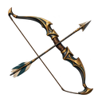
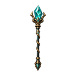
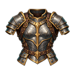
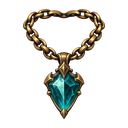
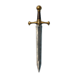
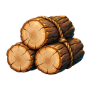
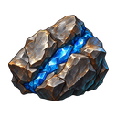
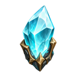
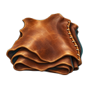

EM SUA POSSE
Itens e equipamentos ORDENADO POR RARIDADE

Arco do Caçador Arma · Raro
ÚNICO 
Cajado Arcano Arma · Épico
ÚNICO 
Armadura Reforçada Peitoral · Incomum
ÚNICO Botas de Viajante Botas · Incomum
ÚNICO 
Amuleto do Caçador Acessório · Raro
ÚNICO 
Espada de Ferro Arma · Comum
ÚNICO 
Madeira Rústica Material
× 238 
Minério Bruto Material
× 114 
Cristal Bruto Material
× 24 
Couro Tratado Material
× 86 Barra de Ferro Material
× 42 Erva Medicinal Material
× 67 Materiais empilham; cada equipamento mantém instância e atributos próprios. Nome, categoria, raridade e quantidade permanecem visíveis sem depender do ícone.
ARMA · ARCO
Arco do Caçador RARO Peça única da companhia. Os bônus abaixo pertencem a esta instância, não a todos os arcos do catálogo.
Poder + 182
Agilidade + 16
Precisão + 12
Proprietário Lyra Ventoverde Slots de Lyra ARMA PRINCIPAL Arco do Caçador
ARMADURA Túnica do Caçador
ACESSÓRIO 2 Vazio
Ver ficha de Lyra Refinar Desmontar
Ações de Ferreiro exigem custo, requisitos e confirmação reais antes de modificar esta instância.